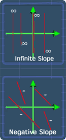

Positive & Negative Slope
Lesson Objective
This lesson shows your under what circumstances a
line can have negative slope, positive slope,
zero or infinite slope.
About This Lesson
After you have familiarized with the slope
formula. It is time to analyze the slope of a
line further.
In this lesson, we will see under what circumstances the a line can have:
In this lesson, we will see under what circumstances the a line can have:
- Positive Slope
- Negative Slope
- Zero Slope
- Infinite Slope

Tip #1
Understand how the 'change in y' and 'change in
x' are calculated. To recall them, you can watch the math video in the slope of a
line lesson.
It is also useful to learn about the slope formula so that it will be easier to understand this lesson.
It is also useful to learn about the slope formula so that it will be easier to understand this lesson.
Tip #2
We will come across something called 'infinite
slope'. To better comprehend it, let me first explain 'infinite number'
in a simplistic way.
Observe the following sequence:
2 ÷ 0.1 = 20
2 ÷ 0.001 = 2000
2 ÷ 0.00001 = 200000
2 ÷ 0.0000001 = 20000000
2 ÷ 0.000000001 = 2000000000
2 ÷ 0.00000000001 = 200000000000
2 ÷ 0 = infinitely large number
Notice that as 2 is divided by a smaller number, you will get a larger number. Now, if 2 is divided by 0, we can roughly say that we will get an infinitely large number.
Why roughly? This is because it would be more accurate to say that the number is 'undefined'. But, for the sake of simplicity, I will not explain this for now.
Observe the following sequence:
2 ÷ 0.1 = 20
2 ÷ 0.001 = 2000
2 ÷ 0.00001 = 200000
2 ÷ 0.0000001 = 20000000
2 ÷ 0.000000001 = 2000000000
2 ÷ 0.00000000001 = 200000000000
2 ÷ 0 = infinitely large number
Notice that as 2 is divided by a smaller number, you will get a larger number. Now, if 2 is divided by 0, we can roughly say that we will get an infinitely large number.
Why roughly? This is because it would be more accurate to say that the number is 'undefined'. But, for the sake of simplicity, I will not explain this for now.
Math Video Transcript
Multiple Choice Questions (MCQ)
Now, let's try some MCQ questions to understand
this lesson better.
You can start by going through the series of questions on positive and negative slope or pick your choice of question below.
You can start by going through the series of questions on positive and negative slope or pick your choice of question below.
- Question 1 on positive and negative slope.